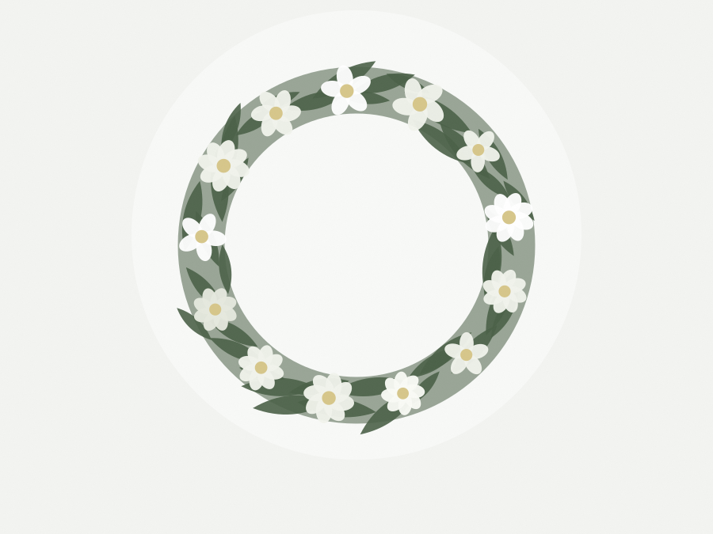

IllustrationCouronne
Couronne ronde montée sur mousse, feuillage et fleurs de saison. Se dépose au pied du cercueil ou à l'entrée. Ruban avec inscription compris.
prix à définir
Il ne s'agit pas de livrer dans la journée à une personne, mais d'arriver avant une heure précise, dans un lieu — funérarium, lieu de culte, cimetière — qui a ses propres horaires d'accès. Et il n'y a pas de seconde chance le lendemain.
C'est pour ça que ce parcours est séparé du catalogue et qu'il demande d'autres informations. Si le délai ne permet pas d'être à l'heure, nous le disons avant la commande plutôt qu'après.
La date et l'heure de la cérémonie. Le lieu exact, avec son nom. Le nom du défunt, pour que l'accueil sache où déposer. Et le texte du ruban.
Un délai minimum s'applique entre la commande et la cérémonie. Il est affiché avant la validation, pas découvert après.
Que le lieu est accessible à l'heure demandée, et que la composition tient le trajet. Une couronne montée sur mousse ne voyage pas comme un bouquet dans du papier.
Si l'un des deux ne tient pas, la commande est refusée et expliquée. C'est plus utile qu'un remboursement le lendemain.

IllustrationCouronne ronde montée sur mousse, feuillage et fleurs de saison. Se dépose au pied du cercueil ou à l'entrée. Ruban avec inscription compris.
Gerbe à plat, présentée le long du cercueil. Gamme sobre, feuillage sombre. Ruban avec inscription compris.
Les prix des compositions de deuil dépendent de la taille et du montage. Ils sont à définir avec toi — je ne les invente pas.
Ce formulaire est volontairement plus long que celui du catalogue. Chaque champ correspond à une erreur possible qu'on préfère éviter.